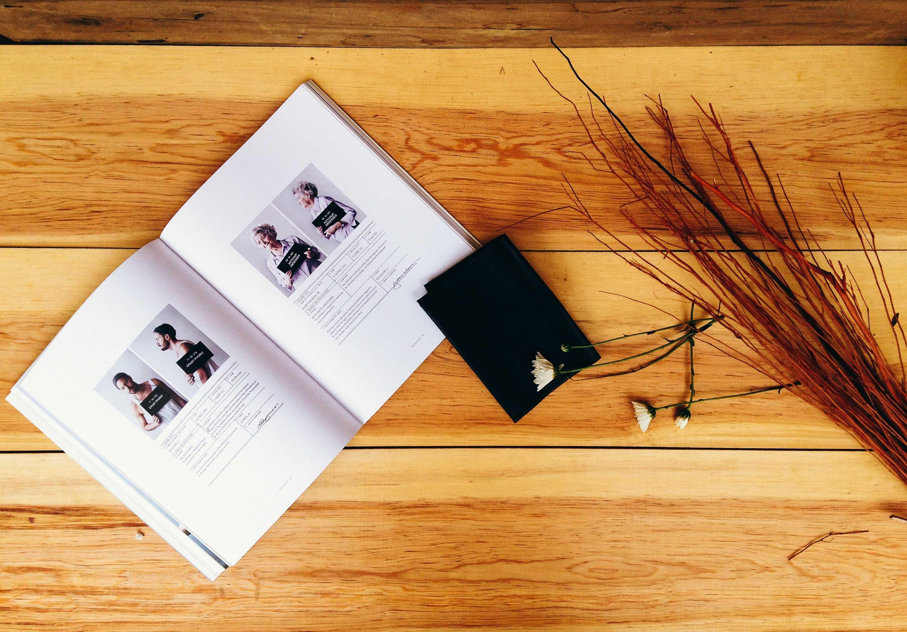
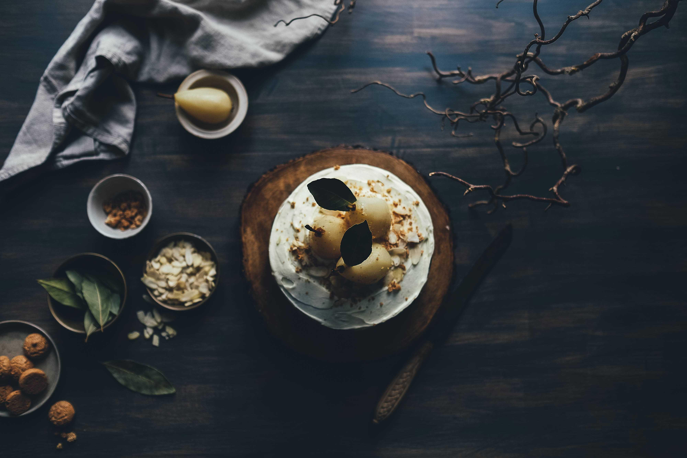

YouTube, with the Shorts taken out.YouTube, with the Shorts taken out.
idyll.day

Before Instagram
opens, a line
you wrote.Before Instagram
opens, a line
you wrote.
idyll.day
Fifty minutes. Then the apps come back.Fifty minutes. Then the apps come back.
Focus, in Idyll